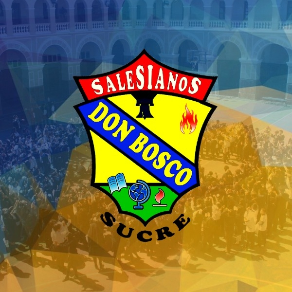

Antecedentes
- El país cuenta con 17,212 unidades educativas.
- En Chuquisaca, hay 470 unidades educativas fiscales y privadas.
- La Unidad Educativa "Don Bosco" es una institución católica privada, fundada en 1963.Desde 2018, utiliza un sistema informático para tareas como la inscripción y el registro de notas.
- Este sistema comprende módulos esenciales, cruciales para evaluar el desempeño académico y la progresión de los estudiantes.
Problematica
- Desafíos significativos en la gestión de notas y la administración académica.
- El sistema académico actual presenta deficiencias considerables.
- Su mantenimiento y depuración son complicados.
- La falta de seguimiento de estándares.
- Generan problemas en la escalabilidad y actualizaciones.
- Resultando en una arquitectura propensa a errores y vulnerabilidades de seguridad.
Problema
- Perjudica de manera significativa.
- Escalar y agregar nuevas funcionalidades.
- Requerimientos de la unidad educativa.
Objetivo Especifico
- Facilitar el acceso al plantel docente para el llenado de planillasde notas.
- Organizar la información relevante para la gestión académica y diseñar la Base de Datos que permita la escalabilidad y adaptabilidad que responda a los cambios en la estructura de la evaluación académica.
- Optimizar la gestión de usuarios y accesos por roles y niveles al sistema, garantizando una distribución eficiente y precisa de las responsabilidades.
- Generar centralizadores por temporada académica que contenga las notas finales de todas las materias de un determinado curso, y ponderar debidamente por los parámetros internos de la Unidad Educativa.
- Elaborar un proceso automatizado de inscripción al inicio de la gestión con la reutilización de la información de la gestión anterior, asegurando la seguridad de los datos, generando informes académicos, boletines en formato PDF
Justificación
- Perjudica de manera significativa.
- Escalar y agregar nuevas funcionalidades.
- Requerimientos de la unidad educativa.
Col. Don Bosco Sucre


Ubicación